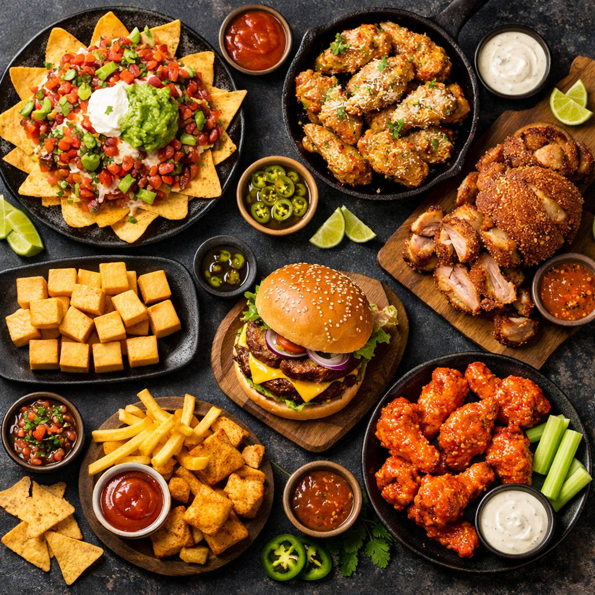

A small kitchen with a big dream.
NachorrificbyCHUG began in June 2019 as a home-based food business. It started with single orders, original recipes, and the simple goal of creating flavorful food people would remember.
The first featured item was nachos, and that became the spark behind the brand name. The word CHUG was inspired by the founder’s youngest child, making the business name personal, warm, and rooted in family.
First Signature Item
Nachos that helped shape the brand identity.
Built from Home
Started while balancing motherhood, cooking, and deliveries.
How the story unfolded
Every step of the business was built through care, consistency, and community support.
June 2019
The brand launched as a home-based food business with nachos as its first featured item.
Early Orders
Single orders began coming in, built on original homemade recipes and word-of-mouth support.
Growing Demand
Orders expanded into bulk requests as more people discovered the brand and shared it with others.
Community Favorite
The menu continued to grow, powered by customer trust, memorable flavors, and a strong local identity.
The ingredients behind the brand
More than food, NachorrificbyCHUG is a mix of creativity, comfort, family, and premium flavor.
Quality
Every order is prepared with attention to flavor, texture, and presentation.
Heart
The business was shaped by motherhood, effort, and a personal passion for cooking.
Premium Flavor
The menu is built around satisfying cravings and standout comfort food favorites.
Shareable Vibe
Perfect for food trips, barkada moments, celebrations, and everyday cravings.
Flavors, color, and food


Explore the menu that started it all.
Discover the signature favorites that helped turn a home-based business into a growing local brand.
View Menu